Final Fantasy XV est un jeu vidéo de rôle et d'action développé par Square Enix, 2016.
L'histoire suit le prince Noctis et ses trois amis, Gladiolus, Ignis, Prompto dans une aventure à travers le monde d'Eos.
Le jeu propose un vaste monde à explorer, des combats dynamiques, des créatures mythiques et une histoire centrée sur l'amitié, le courage et le sacrifice.
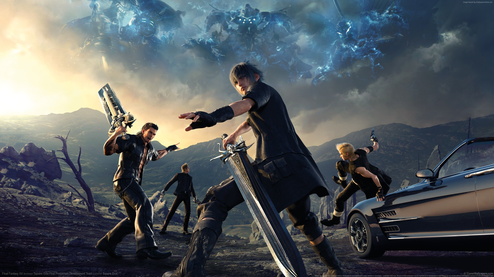
Découvrez les quatre compagnons principaux de l'aventure Final Fantasy XV.
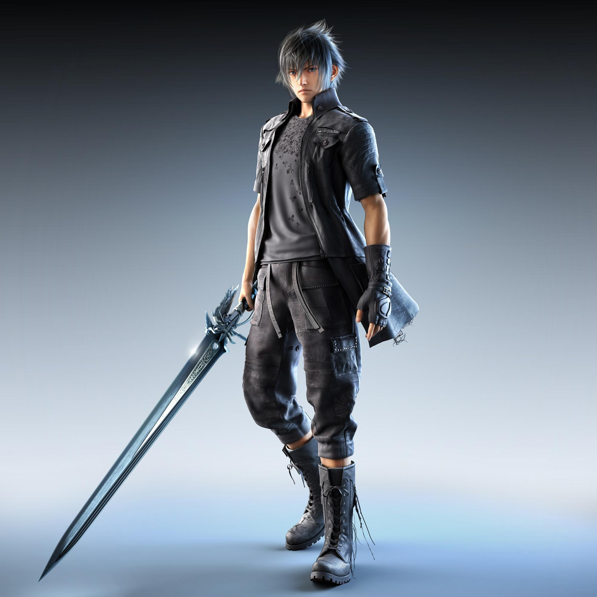
Noctis est le prince héritier du royaume de Lucis. Il part en voyage avec ses trois meilleurs amis pour accomplir son destin.
Gladiolus est le protecteur de Noctis. Courageux et puissant, il veille sur ses compagnons.
Ignis est le conseiller de Noctis. Intelligent et organisé, il accompagne le groupe et prépare leurs repas pendant le voyage.
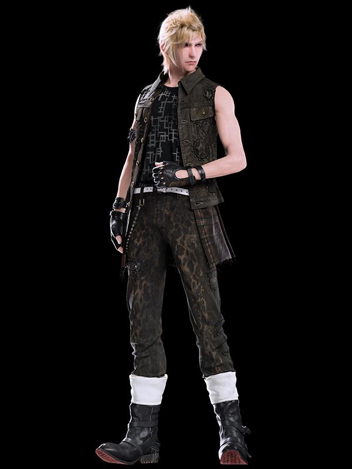
Prompto est un ami fidèle de Noctis. Sociable et optimiste, il aime prendre des photos pour garder des souvenirs de leur aventure.
Le monde d'Eos propose de nombreux paysages et des villes magnifiques à découvrir.
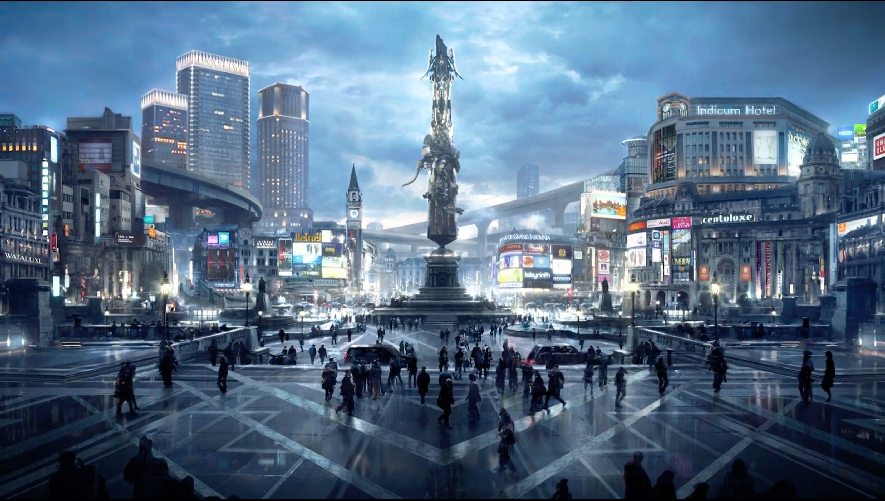
La capitale du royaume de Lucis. C'est une immense ville moderne où se trouve le palais royal, symbole du pouvoir de la famille de Noctis.
Une station-service située dans une région désertique. Noctis et ses compagnons y font réparer leur voiture, la Regalia, au début de leur aventure.
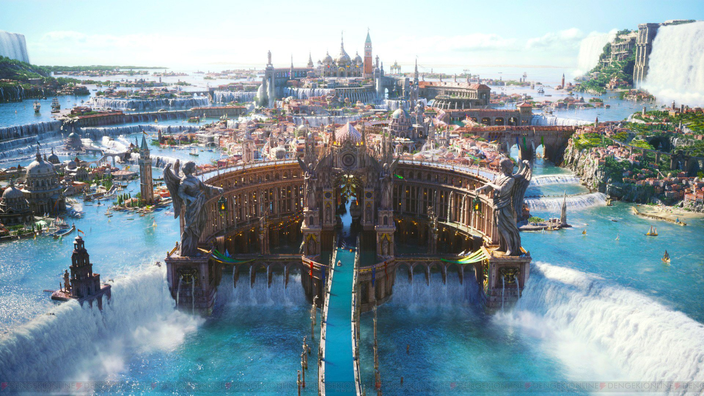
Une magnifique ville construite autour de canaux, inspirée de Venise. Elle se distingue par ses bâtiments élégants et ses gondoles.
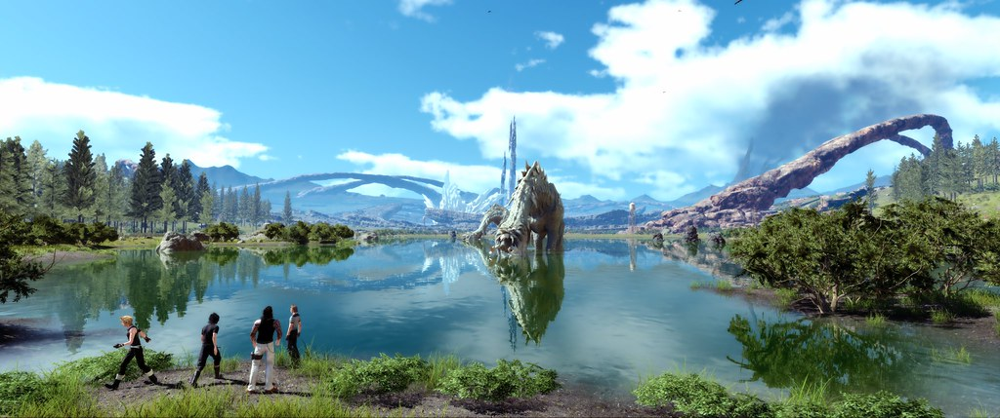
Une vaste région naturelle composée de plaines verdoyantes, de forêts, de lacs et de montagnes. Elle permet d'explorer le monde ouvert et de découvrir de nombreuses créatures.
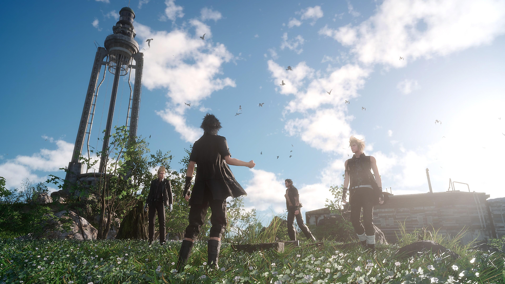
Un lieu côtier avec un phare surplombant la mer. Il constitue une étape importante du voyage de Noctis et de ses amis.
Dans Final Fantasy XV, le système de combat mélange action, stratégie et magie. Le joueur contrôle principalement Noctis et peut utiliser différentes capacités pour vaincre ses ennemis. Chaque combat demande de bien choisir ses armes et d'exploiter les points faibles des adversaires.
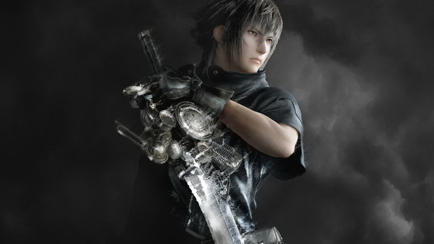
Noctis peut manier plusieurs types d'armes, comme les épées, les dagues, les lances et les armes royales. Chaque arme possède ses propres caractéristiques et permet d'adopter différentes stratégies pendant les combats.
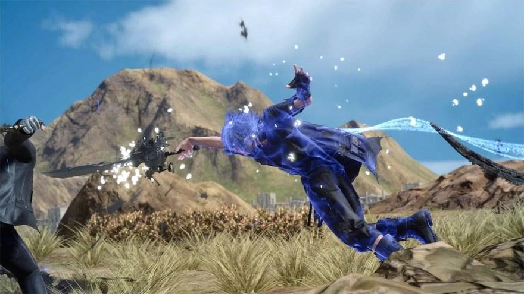
La téléportation est l'une des capacités emblématiques de Noctis. Elle lui permet de se déplacer rapidement vers ses ennemis ou d'atteindre des endroits éloignés. Cette technique rend les combats plus dynamiques et spectaculaires.
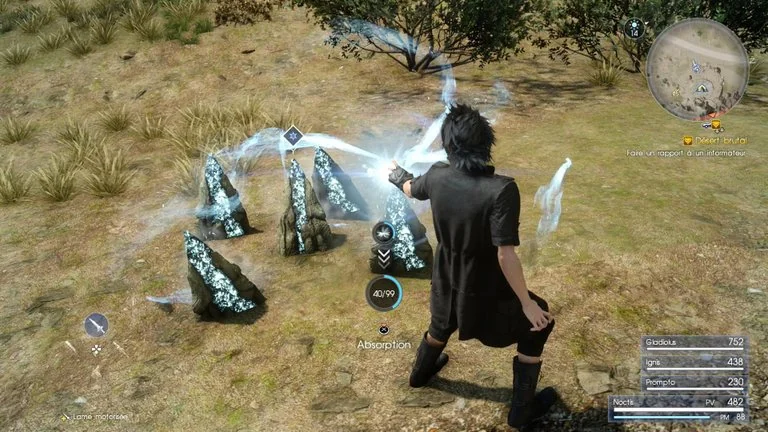
La magie joue un rôle important dans les combats. Noctis peut utiliser différents éléments, notamment le feu, la glace et la foudre. Ces pouvoirs permettent d'infliger des dégâts aux ennemis et d'adapter les attaques selon les situations.
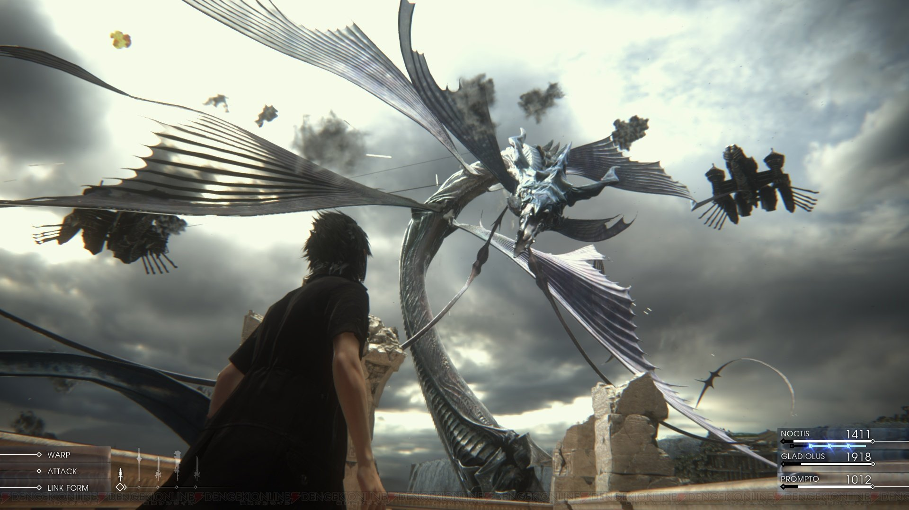
Les invocations, également appelées Astrals, sont des entités extrêmement puissantes. Parmi elles se trouvent Titan, Ramuh, Leviathan et Shiva. Leur apparition pendant certains combats permet de déclencher des attaques impressionnantes et de renverser le cours de la bataille.
La musique occupe une place importante dans Final Fantasy XV. Composée principalement par Yoko Shimomura, la bande-son accompagne les aventures de Noctis et de ses compagnons, des moments d'exploration aux combats les plus intenses.
Final Fantasy XV est un jeu qui propose une aventure riche en émotions, en action et en découvertes. Grâce à son univers fantastique, ses paysages variés et ses personnages attachants, il offre une expérience unique aux joueurs.
L'histoire de Noctis et de ses trois compagnons met en avant des valeurs importantes comme l'amitié, la loyauté, le courage et le sacrifice. Entre les combats, l'exploration et les moments partagés entre les personnages, le jeu parvient à créer une aventure mémorable.
Final Fantasy XV reste un épisode marquant de la saga Final Fantasy grâce à son univers, sa musique et son histoire.
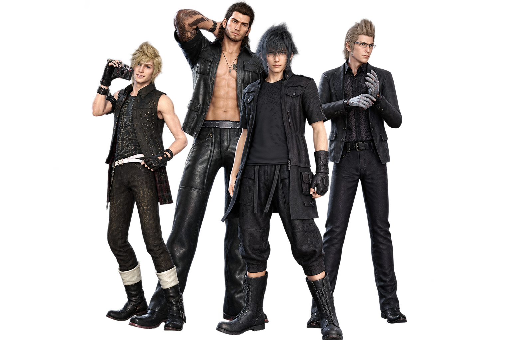